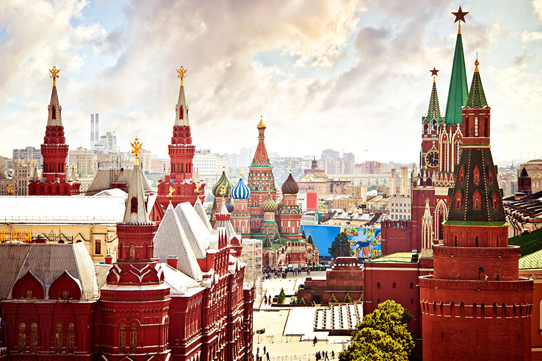
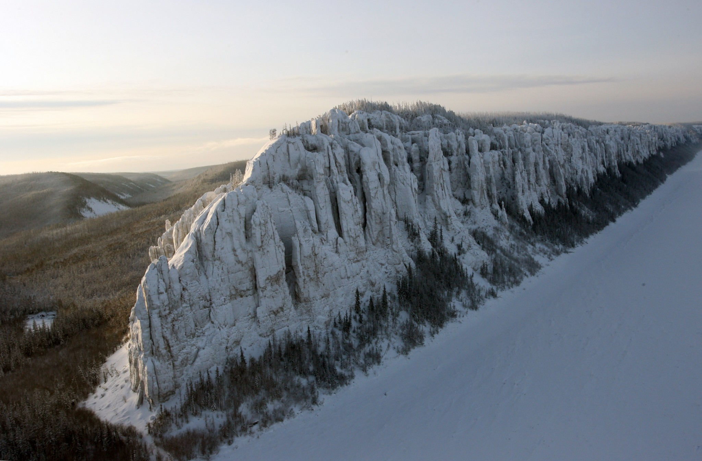
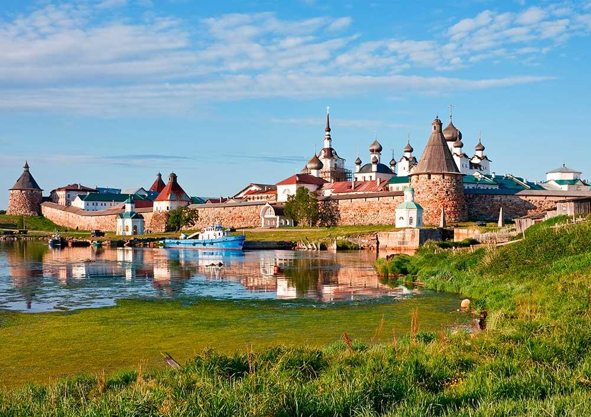
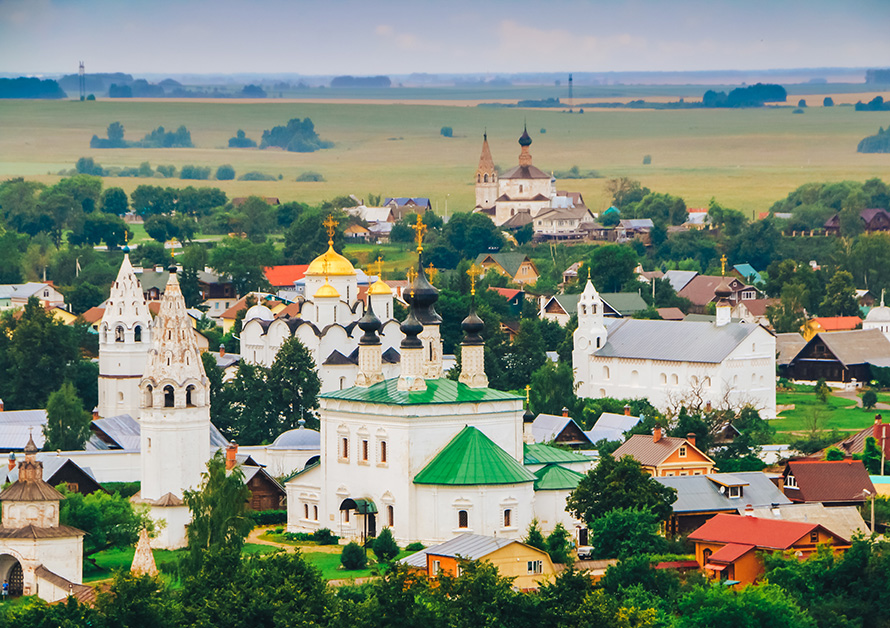
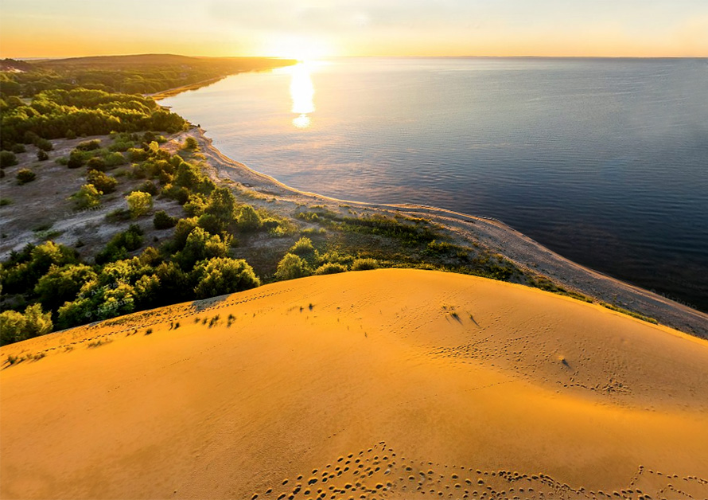

10 мест в России, где нужно обязательно побывать
Учеба в России – это отличная возможность совместить учебу и путешествия. В нашей стране много удивительно красивых мест и уникальных достопримечательностей
Московский Кремль и Красная площадь
Символ не только Москвы, но и всей России. Кремль – самая древняя часть города, где была основана крепость князя Юрия Долгорукого, впервые упомянутая в летописи в 1147 году. На его территории размещается комплекс строений XV-XIX вв., в том числе Большой Кремлевский дворец, Оружейная палата, здание Сената, где находится резиденция российского президента, церковные постройки, а также образцы русского литейного искусства – Царь-пушка и Царь-колокол. На Красной площади, история которой началась в XIV веке, находится храм Василия Блаженного, здание Государственного исторического музея и Мавзолей лидера большевиков Владимира Ленина.
Исторический центр Санкт-Петербурга

Санкт-Петербург – один из самых красивых городов мира, прежде всего, благодаря уникальной архитектуре. Его исторический центр и пригороды известны выдающимися памятниками дворцового и церковного зодчества, созданными российскими и итальянскими мастерами в период с XVIII-XIX вв. Среди обязательных для посещения – Петропавловская крепость, Петропавловский собор, Кунсткамера, Летний дворец Петра I, Зимний дворец, Смольный монастырь, музей Эрмитаж, Академия наук, Академия художеств, Мраморный, Таврический, Аничков дворцы, Казанский и Исаакиевский соборы, Стрелка Васильевского острова, Дворцовая площадь, Невский проспект.
Ленские столбы
Ленские столбы – вертикальные скальные образования, протянувшиеся на 40 км вдоль берега реки Лена в Якутии. Их происхождение относят к раннему кембрийскому периоду (530 миллионов лет назад). Издалека столбы кажутся монолитной стеной, спускающейся в реку. Суровые и в то же время величественные, они завораживают своей необыкновенной красотой.
Соловецкие острова
Соловецкий архипелаг, включающий шесть островов площадью свыше 300 кв. километров, находится в Белом море в 250 км от Архангельска. Включает множество археологических памятников, древнейшие из них относятся ко II-III тысячелетиям до н.э. Один из центральных объектов — Соловецкий монастырь, основанный в первой половине XV века. В начале XX века многовековой оплот православия превратили в лагерь для политзаключенных, просуществовавший до 1939 года. Монашеская жизнь на островах возобновилась лишь в 90-е годы. Соловецкий архипелаг, преобразованный в историко-культурный заповедник, интересен не только своей полной драматизма историей, но и необычным ландшафтом, включающем холмы, озера, впадины.
Белокаменные памятники Владимира и Суздаля
Древнейшие русские города, в XII-XIII вв. стоявшие во главе древнерусского Владимиро-Суздальского княжества, хранят уникальные образцы собственной архитектурно-художественной школы. Ее основные черты – кладка из плит белого известняка, изысканные пропорции, тонкая резьба по камню, внешняя легкость зданий, вписанные в природный ландшафт.
Самые яркие образцы этого стиля – владимирские Успенский и Дмитриевский соборы, Золотые ворота, суздальские Рождественский собор и архиерейские палаты Суздальского кремля, Спасо-Евфимиев и Покровский монастыри.
Озеро Байкал

Расположенное на юге Восточной Сибири озеро Байкал является уникальным природным объектом, его возраст – 25 миллионов лет. Самый старый пресноводный водоем на Земле. Самое глубокое озеро мира. Самое большое озеро России. Обладает 20-ю процентами мировых запасов пресной воды.
Воды Байкала отличает прозрачность – некоторые предметы видны на глубине до 40 метров. Флора и фауна озера насчитывает тысячи видов и разновидностей растений и животных, 3/4 из них не встречаются в других местах. Необычайная красота Байкала и окрестностей с множеством живописных бухт и причудливых утесов привлекает туристов со всех уголков России и мира. Одно из самых популярных в России туристических мест.
Долина гейзеров и вулканы Камчатки

Расположенный на Дальнем Востоке России полуостров Камчатка – это огромный естественный музей вулканологии, насчитывающий свыше 300 действующих и потухших вулканов, десятки гейзеров. На территории основанного в 1934 году Кроноцкого биосферного заповедника находятся 26 вулканов (в том числе 12 действующих), горные ледники и озера.
Долина гейзеров – единственная в Евразии, феномен мирового масштаба. На шестикилометровом участке находятся более 20 крупных гейзеров, десятки термальных источников и парогазовых струй.
Горы Алтая

Алтай – регион на юго-востоке Западной Сибири, отличается контрастным ландшафтом – от степей и тайги до горных тундр и ледников. На его территории находятся четыре природных парка, охраняемые ЮНЕСКО. Алтайский заповедник, насчитывающий 1500 видов высших растений, знаменит Телецким озером, которое по пресноводным запасам уступает лишь Байкалу, и уникальной прителецкой тайгой. Главная достопримечательность природного парка Белухи – одноименная двуглавая гора высотой 4506 м, покрытая шапкой вечных снегов и льдов. Была покорена лишь в XX веке.
В Катунском биосферном заповеднике преобладает ледниковый ландшафт, ледники занимают до 50% его территории. Самый большой из них – Катунский питает реку Катунь, популярную среди любителей сплавов. Там же расположен живописный каскад ледниковых озер. И наконец, Зона Покоя «Укок» – высокогорное плато, на котором обнаружены наскальные рисунки первобытных художников и древние захоронения.
Куршская коса
Песчаный полуостров на юго-востоке Балтийского моря. Одно из наиболее больших эоловых (созданных под воздействием ветра) образований в мире. Укреплять песчаные образования, разрушаемые морем и ветром, люди начали еще в средние века. К концу XVII-XVIII вв. площадь лесов на косе сократилась до 10%. Пески стали засыпать поселения, дороги и уцелевшие деревья. В середине XIX века были начаты интенсивные работы по восстановлению лесов. Сегодня лесополоса занимает 2/3 территории Куршской косы.
Ласточкино гнездо

Миниатюрный неоготический замок находится на краю сорокаметровой отвесной Аврориной скалы на юге Крыма. Строение, получившие название «Ласточкино гнездо», благодаря своим размерам (ширина – 10 метров, длина – 20 метров, высота – 12 метров) и местоположению, было создано в 1912 году по проекту архитектора Леонида Шервуда.
За более чем вековую историю замок сменил нескольких владельцев и пережил землетрясение. Первоначально принадлежал немецкому промышленнику Владимиру Штейнгелю. В начале Первой мировой войны новый владелец открыл в нем ресторан. В 30-е годы сооружение признали аварийным и закрыли. Реставрировать строение начали лишь спустя 30 лет.